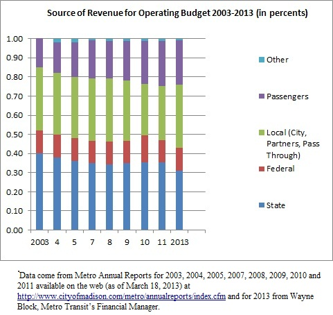

In a blog written shortly after he had raised bus fares, covered bus windows with advertisements, let our intercity bus terminal go without a peep, and lost re-election, the former mayor Dave Cieslewicz writes that “Cars are very expensive. Much more expensive than mass transit. And it's time we got that word out.” He then used 2009 figures from the City of Madison’s budget to demonstrate that point. He showed for example, how the city’s allocation to Metro Transit paled in comparison to what it spent on road building and rebuilding.
Here, I attempt to share a little of what I learned about Metro’s 2013 operating budget from Metro’s Finance Manager Wayne Block, sometimes attempting to make sense of it by comparing it to Metro’s budget at other times.
Taxes and budgets are never sexy topics. But if we are to have any idea of how our bus system is financed, we must grit our teeth and enter into the world of figures.
For 2013, Metro taxed residential property in Madison at a rate of .00097. An average house, valued at $232,024, paid about $225. Although renters indirectly pay the property tax paid by their landlord, there is no clear formula for determining the proportion of rent charged to cover the property tax.
The city’s contribution to Metro’s 2013 operating budget is about $2.5 million more than in 2011. A major motivator for the increase was to compensate for the huge drop in state assistance from 35 percent of the total in 2011 to 31 percent in 2013. The local share grew accordingly from 28 percent of the total in 2011 to 33 percent in 2013. This is shown graphically below.

Lest one quickly opine that bus riders instead of the general taxpayer pay more of the cost, an issue addressed further in another essay, the figure at least shows the situation from 2003 up to 2013. While passenger revenue accounted for 16 percent of Metro’s operating budget in 2003, the contribution from passenger revenue rose gradually and fitfully over the years to 24 percent in 2011 and 23 percent in 2013, a substantially larger increase than what was experienced by the local share.
 Madison Area Bus Advocates
Madison Area Bus Advocates